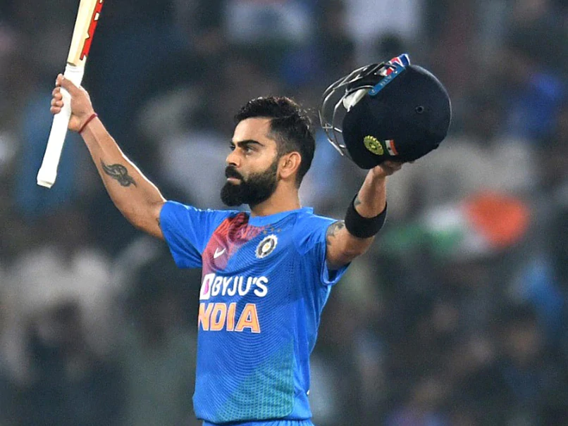

Smaowl Project by Sahir Imtiaz
Home page
About my favorite player
Statistics
Virat Kohli

In August 2008, Kohli was included in the Indian ODI squad for tour of Sri Lanka and the Champions Trophy in Pakistan. Prior to the Sri Lankan tour, Kohli had played only eight List A matches,
and his selection was called a "surprise call-up".
During the Sri Lankan tour, as both first-choice openers Sachin Tendulkar and Virender Sehwag were injured, Kohli batted as a makeshift opener throughout the series. He made his international debut, at the age of 19
in the first ODI of the tour and was dismissed for 12.
He made his first ODI half century, a score of 54, in the fourth match which helped India win the series.
He had scores of 37, 25 and 31 in the other three matches.
India won the series 3–2 which was India's first ODI series win against Sri Lanka in Sri Lanka.
After the Champions Trophy was postponed to 2009, Kohli was picked as a replacement for the injured Shikhar Dhawan in the India A squad for the unofficial Tests against Australia A in September 2008.
He batted only once in the two-match series, and scored 49 in that innings.
Later that month in September 2008, he played for Delhi in the Nissar Trophy against SNGPL (winners of Quaid-i-Azam Trophy from Pakistan) and top-scored for Delhi in both innings, with 52 and 197.
The match was drawn but SNGPL won the trophy on first-innings lead.In October 2008, Kohli played for Indian Board President's XI in a four-day tour match against Australia.
He made 105 and 16* in that match against a bowling line-up consisting of Brett Lee, Stuart Clark, Mitchell Johnson, Peter Siddle and Jason Krejza.
Kohli was included in the squad for the home ODI series against England in November 2008 but was not given a chance to play, due to the inclusion of Tendulkar and Sehwag in the team.In December 2008,
Kohli was given a Grade D contract in the annual BCCI contracts list which entitled him to receive ₹1.5 million (equivalent to ₹3.4 million or US$47,000 in 2019).
He was then dropped from the squad for the five-match ODI series in Sri Lanka against Sri Lanka in January 2009.
Kohli was selected in the four-team Emerging Players Tournament in July–August 2009 held in Australia.
He opened the innings for India Emerging Players in that tournament and finished as the leading run-getter with 398 runs from seven matches at an average of 66.33.
He scored 104 off 102 balls in the final against South Africa Emerging Players at Brisbane to help his team win the match by 17 runs and clinch the title.
At the conclusion of the tournament, Kris Srikkanth, the chairman of the national selection committee, was impressed with Kohli and remarked "I must say, opener Virat Kohli was outstanding.
Some of the shots he played spoke about his ability."Kohli has called this tournament as the "turning point" of his career.
Kohli returned to the national team replacing the injured Gautam Gambhir in the Indian squad for the tri-series in Sri Lanka.
He batted at number 4 for India in the 2009 ICC Champions Trophy because of an injury to Yuvraj Singh.
In the inconsequential group match against the West Indies, Kohli scored an unbeaten 79 in India's successful chase of 130 and won his first man of the match award.
Kohli played as a reserve batsman in the seven-match home ODI series against Australia, appearing in two matches as injury replacement.
He found a place in the home ODI series against Sri Lanka in December 2009 and scored 27 and 54 in the first two ODIs before making way for Yuvraj who regained fitness for the third ODI.
However, Yuvraj's finger injury recurred leading to him being ruled out indefinitely.
Kohli returned to the team in the fourth ODI at Kolkata and scored his first ODI century–107 off 111 balls–sharing a 224-run partnership for the third wicket with Gambhir, who made his personal best score of 150.
India won by seven wickets to seal the series 3–1.The man of the match was awarded to Gambhir who gave the award to Kohli.
Tendulkar was rested for the tri-nation ODI tournament in Bangladesh in January 2010, which enabled Kohli to play in each of India's five matches.
Against Bangladesh, he scored 91 to help secure a win after India collapsed to 51/3 early in their run-chase of 297.
In the next match against Sri Lanka, Kohli ended unbeaten on 71 to help India win the match with a bonus point having chased down their target of 214 within 33 overs.
The next day, he scored his second ODI century, against Bangladesh, bringing up the mark with the winning runs.
He became only the third Indian batsman to score two ODI centuries before their 22nd birthday, after Tendulkar and Suresh Raina.
Kohli was much praised for his performances during the series in particular by the Indian captain Dhoni.
Although Kohli made only two runs in the final against Sri Lanka in a four-wicket Indian defeat, he finished as the leading run-getter of the series with 275 runs from five innings at an average of 91.66.
In the three-match ODI series at home against South Africa in February, Kohli batted in two games and had scores of 31 and 57.